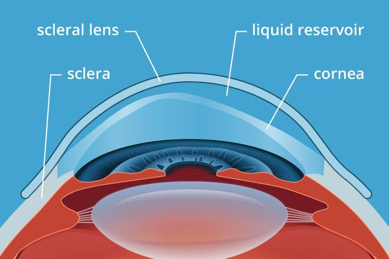

Scleral Lenses
Scleral contact lenses are large diameter rigid contact lenses that stretch over the entire cornea and rest only on the white part of your eye (the sclera). There is no contact between the scleral lens and the cornea- the space in between is filled by preservative free saline. Whilst historically these may have been thought of more as last resort options, they are becoming more and more popular because of their wide use case and many advantages.
Special uses of scleral lenses
- As such a specialised lens, scleral lenses can help in many of the situations that limit the use of other corrections:
- Severely irregular corneal shape: such as what occurs in advanced keratonocus and other conditions involving corneal thinning like pellucid marginal degeneration1. As these lenses skip over the entire cornea, they can help correct vision for patients that cannot benefit from regular rigid lenses.
- Avoiding or delaying corneal graft: scleral lenses can improve vision in advanced stages of disease that would otherwise need surgery, and their use has been associated with lower rates of corneal grafts2.
- Corneal protection: scleral lenses essentially form a shield over the cornea whilst providing constant lubrication via the saline reservoir, so are also used when the cornea becomes severely damaged from conditions like advanced dry eye, recurrent corneal erosion, neurotrophic keratopathy and Stevens-Johnson Syndrome.
As with any type of contact lens, scleral lenses have their own particular advantages and disadvantages that can play a factor in whether or not these lenses are suitable for you.
| Advantages | Disadvantages |
|---|---|
|
Excellent comfort and stability Minimal dependency on the shape of the cornea to fit properly and provide good vision Better protection from particles or irritants No issues with dry eye |
Generally one of the most expensive contact lens options Initial adaptation can still take some time Large size can make insertion/removal harder for some people |
1. Kompella, V. B., Aasuri, M. K., & Rao, G. N. (2002). Management of pellucid marginal corneal degeneration with rigid gas permeable contact lenses. Eye & Contact Lens, 28(3), 140-145.
2. Ling, J. J., Mian, S. I., Stein, J. D., Rahman, M., Poliskey, J., & Woodward, M. A. (2021). Impact of scleral contact lens use on the rate of corneal transplantation for keratoconus. Cornea, 40(1), 39-42.